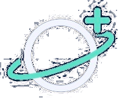

Rate 1 (low) to 5 (high). A crewmate rates you too, because tired people rarely notice it themselves.
Click the box or press Space as soon as it turns mint. This gives an honest tiredness number.
Leave a box empty to skip a test.
Target 6–7 resistance sessions. Protects bones and muscles.
Helps prevent kidney stones.
Target 35–90.
Follow these steps now. Do not wait for Earth.
Do now: oxygen mask, keep the person still.
Tick every sign you see:
Rows marked proposal are team ideas the medical team must confirm.